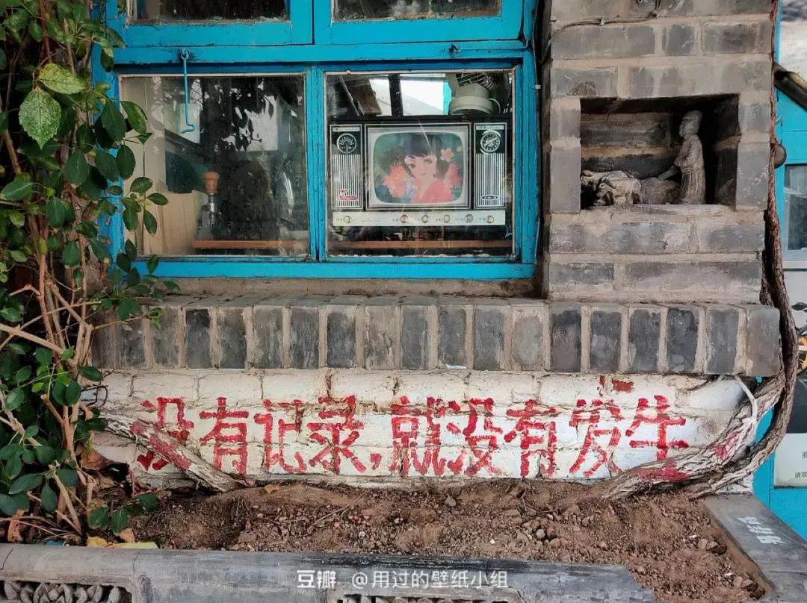

本文是张衔瑜第171篇推文
共计979个字
最近在听窦唯的歌。
主要是最近的一些，百家姓、千字文、三字经和宋词元曲。从听者的角度，他没有一直留在黑豹、不一定的那些桎梏里，真是再好不过了。
学到深夜之后，把所有嘈杂的外音屏蔽掉。关掉电脑、升起椅子。点歌，关灯。
有烟雾报警器，不能点奇怪的香氛；有法律规定，买不到也不能嚼口香糖。坐，像在剧院里。
刚刚写到这里，本来想说其他有关学到深夜的事。但是一想，前面写了“关掉电脑”，那就不写这个话题了。
骂骂咧咧的老夫子，捻着手指扇骂：“时无英雄，竖子成名。”说的大概就是一些造假跑出边际一个呼伦贝尔大草原，回头来还什么都拿到了的人。吐槽的话有很多，其中一部分是自我感动，另一部分是连近似解也提供不出来的方程。
大概四五天前，开始觉得69岁什么都会的人很恶心。果不其然，退江湖又重新回来演电影，顺便收割一波真粉。这和气功大师有什么区别？把这当玩笑的和当真的。并不是改过自新不能接受，而是没有改、继续骗和偷袭。这和瓜田里监守自盗没有区别。
割裂好说。有人相爱，有人夜里看海，有人七八科作业写不出来。我也去夜里看海，看海回来再写七八九十个程序交到集群里边去。跑得也很好，超算运转也没问题。调用也很流畅，就是结果是个错的。
<你为什么要一直盯着看啊？>
“得 看ta是不是出错”
<不盯着会怎么样呢？>
“程序会死。而且你都不知道是什么原因死”
<可是什么东西死了，都不知道原因啊>
朋友说的是对的。
前天去剪头发，晚上八点四十到Tony已经下班了。这家店八点半关。
昨天下午四点，被提醒说他们要是等下去吃饭了呢？于是去理发，只有剪吹没有洗剪吹。而且全程戴着口罩。看了看，也就三个月可以安心科研的创意。
不知道为什么这边龟苓膏会附赠蜂蜜。就好像吃湘菜的时候，拿一杯茶来把辣椒的味道涮掉。那为什么不直接飞到济南，痛饮三百杯趵突泉的水。
还是睡觉有意思。
就是困意总不按常理出牌。
甜的豆花很不错。好几天抹茶卷的代餐都换成了豆花
外面又打雷又下雨，会不会有球状闪电导电到窗台
医生说九点吃药。有人六点就吃。医生问这个人为什么这么做，这人说想趁着病毒不注意。反智和弱智之间有明确的界限吗？Sherlock和暴民之间有区别吗？让我们来恭喜盲生。
换一个好看的键帽、键盘贴、手机壳或者床单枕套，就好像换了个新的。不是外表的问题，而是接触频率导致的主次因为使用而颠覆。好好听歌，不要评论。
